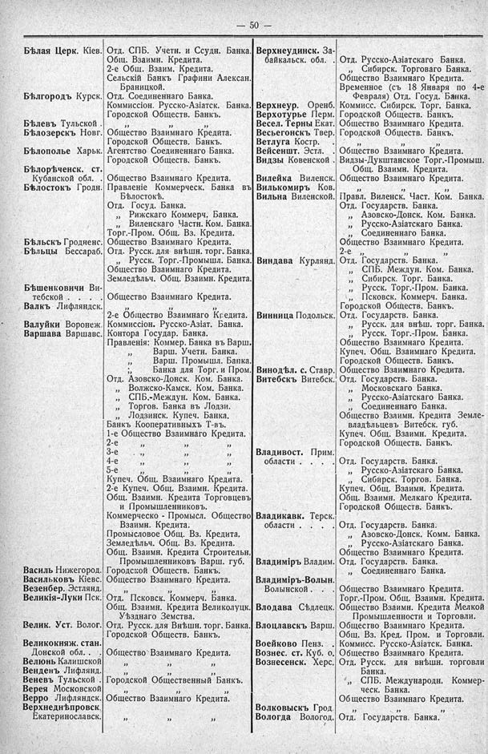

Лист источника 96
Скан

Распознанный текст
— 50 —
Бѣлая Серк. Кіев.
Бѣлгородъ Курск.
Бѣлевъ Тульской .
Бѣлозерскъ Новг.
Бѣлополье Харьк.
Бѣлорѣченск. ст. Кубанской обл. .
Бѣлостокъ Гродн.
Бѣльскъ Гродненс.
Бѣльцы Бессараб.
Бѣшенковичи Витебской . . . .
Валкъ Лифляндск.
Валуйки Воронеж.
Варшава Варшавс.
Василь Нижегород.
Васильковъ Кіевс.
Везенбер. Эстлянд.
Великія-Луки Пск.
Велик. Уст. Волог.
Великокняж. стан. Донской обл. . .
Велюнь Калишской
Венденъ Лифлянд.
Веневъ Тульской .
Верея Московской
Верро Лифляндск.
Верхнеднѣпровск. Екатеринославск.
Отд. СПБ. Учетн. и Ссудн. Банка.
Общ. Взаимн. Кредита.
2-е Общ. Взаим. Кредита.
Сельскій Банкъ Графини Алексан. Браницкой.
Отд. Соединеннаго Банка.
Коммиссіон. Русско-Азіатск. Банка.
Городской Обществ. Банкъ.
” ” ”
Общество Взаимнаго Кредита.
Городской Обществ. Банкъ.
Агентство Соединеннаго Банка.
Городской Обществ. Банкъ.
Общество Взаимнаго Кредита.
Правленіе Коммерческ. Банка въ Бѣлостокѣ.
Отд. Госуд. Банка.
” Рижскаго Коммерч. Банка.
” Виленскаго Частн. Ком. Банка.
Торг.-Пром. Общ. Вз. Кредита.
Общество Взаимнаго Кредита.
Отд. Русск. для внѣшн. торг. Банка.
” Русск. Торг.-Промышл. Банка.
Общество Взаимнаго Кредита.
Земледѣльч. Общ. Взаимн. Кредита.
Общество Взаимнаго Кредита.
2-е Общество Взаимнаго Кредита.
Коммиссіон. Русско-Азіат. Банка.
Контора Государ. Банка.
Правленія: Коммер. Банка въ Варш.
” Варш. Учетн. Банка.
” Варш. Промышл. Банка.
; Банка для Торг. и Пром.
Отд. Азовско-Донск. Ком. Банка.
” Волжско-Камск. Ком. Банка.
” СПБ.-Междун. Ком. Банка.
” Торгов. Банка въ Лодзи.
” Лодзинск. Купеч. Банка.
Банкъ Кооперативныхъ Т-въ.
1-е Общество Взаимнаго Кредита.
2-е ” ” ”
3-е ” ” ”
4-е ” ” ”
5-е ” ” ”
Купеч. Общ. Взаимнаго Кредита.
2-е Купеч. Общ. Взаимн. Кредита.
Общ. Взаимн. Кредита Торговцевъ и Промышленниковъ.
Коммерческо - Промысл. Общество Взаимн. Кредита.
Промысловое Общ. Вз. Кредита.
Земледѣльч. Общ. Вз. Кредита.
Общ. Взаимн. Кредита Строительн. Промышленниковъ Варш. губ.
Городской Обществ. Банкъ.
Общество Взаимнаго Кредита.
” ” ”
Отд. Псковск. Коммерч. Банка.
Общ. Взаимн. Кредита Великолуцк. Уѣзднаго Земства.
Отд. Русск. для Внѣшн. торг. Банка.
Городской Обществ. Банкъ.
Общество Взаимнаго Кредита.
” ” ”
” ” ”
Городской Общественный Банкъ.
” ” ”
Общество Взаимнаго Кредита.
” ” ”
Верхнеудинск. Забайкальск. обл. .
Верхнеур. Оренб.
Верхотурье Перм.
Весел. Терны Екат.
Весьегонскъ Твер.
Ветлуга Костр. . .
Вейсеншт. Эстл. .
Видзы Ковенской .
Вилейка Виленск.
Вилькомиръ Ков.
Вильна Виленской.
Виндава Курлянд.
Винница Подольск.
Винодѣл. с. Ставр.
Витебскъ Витебск.
Владивост. Прим. области . . . .
Владикавк. Терск. области . . . .
Владиміръ Владим.
Владиміръ-Волын. Волынской . .
Влодава Сѣдлецк.
Влоцлавскъ Варш.
Воейково Пенз. .
Вознес. ст. Куб. о.
Вознесенск. Херс.
Волковыскъ Грод.
Вологда Вологод.
Отд. Русско-Азіатскаго Банка.
” Сибирск. Торговаго Банка.
Общество Взаимнаго Кредита.
Временное (съ 18 Января по 4-е Февраля) Отд. Госуд. Банка.
Коммисс. Сибирск. Торг. Банка.
Городской Обществ. Банкъ.
Общество Взаимнаго Кредита.
Городской Обществ. Банкъ.
” ” ”
Общество Взаимнаго Кредита.
Видзы-Дукштанское Торг.-Промыш. Общ. Взаимн. Кредита.
Общество Взаимнаго Кредита.
” ” ”
Правл. Виленск. Част. Ком. Банка.
Отд. Государств. Банка.
” Азовско-Донск. Ком. Банка.
” Русско-Азіатскаго Банка.
” Соединеннаго Банка.
Общество Взаимнаго Кредита.
2-е ” ” ”
Отд. Государств. Банка.
” СПБ. Междун. Ком. Банка.
” Сибирск. Торг. Банка.
” Русск. Торг.-Пром. Банка.
” Псковск. Коммерч. Банка.
Городской Обществ. Банкъ.
Отд. Государств. Банка.
” Русск. для внѣш. торг. Банка.
” Русск. Торг.-Пром. Банка.
Общество Взаимнаго Кредита.
Купеч. Общ. Взаимнаго Кредита.
Городской Обществ. Банкъ.
Общество Взаимнаго Кредита.
Отд. Государств. Банка.
” Московскаго Банка.
” Русско-Азіатскаго Банка.
” Соединеннаго Банка.
Общество Взаимн. Кредита Землевладѣльцевъ Витебск. губ.
Купеч. Общ. Взаимн. Кредита.
Городской Обществ. Банкъ.
Отд. Государств. Банка.
” Русско-Азіатскаго Банка.
” Сибирск. Торгов. Банка.
Купеч. Общ. Взаимн. Кредита.
Общ. Взаимн. Мелкаго Кредита.
Городской Обществ. Банкъ.
Отд. Государств. Банка.
” Азовско-Донск. Комм. Банка.
” Русско-Азіатскаго Банка.
Общество Взаимнаго Кредита.
Отд. Государств. Банка.
” Соединеннаго Банка.
Общество Взаимнаго Кредита.
Торг.-Пром. Общ. Взаимн. Кредита.
Общество Взаимн. Кредита Мелкой Промышленности и Торговли.
Общество Взаимнаго Кредита.
Общ. Вз. Кред. Пром. и Торговли.
Коммисс. Русско-Азіатск. Банка.
Общество Взаимнаго Кредита.
Отд. Русск. для внѣшн. торговли Банка.
” СПБ. Международн. Коммерческ. Банка.
Общество Взаимнаго Кредита.
” ” ”
Отд. Государств. Банка.